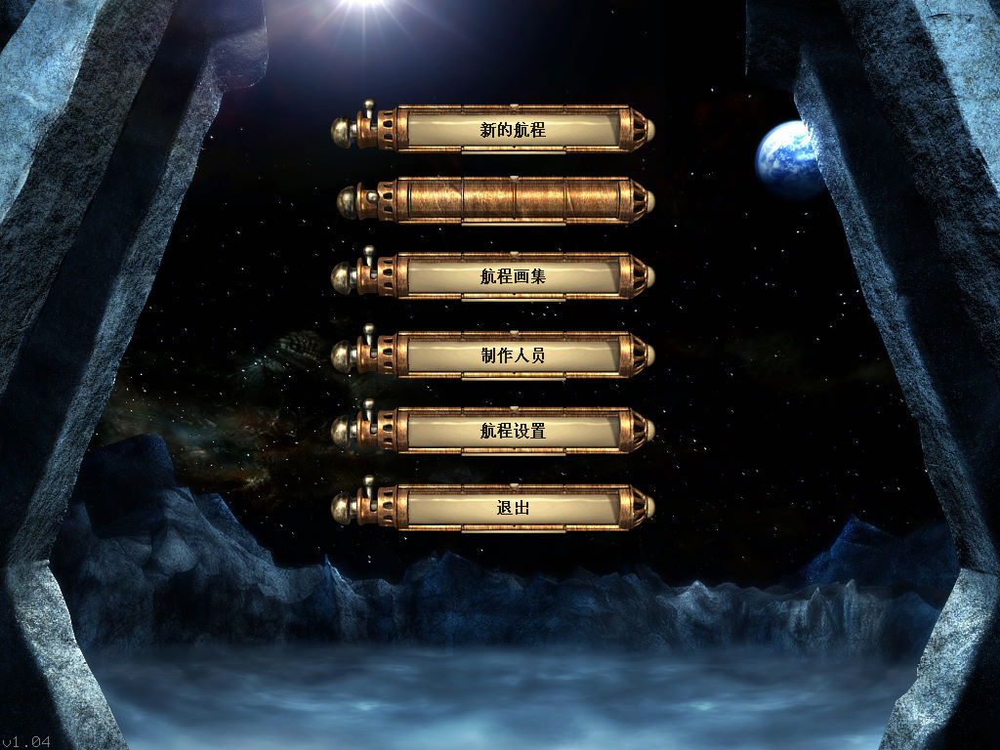
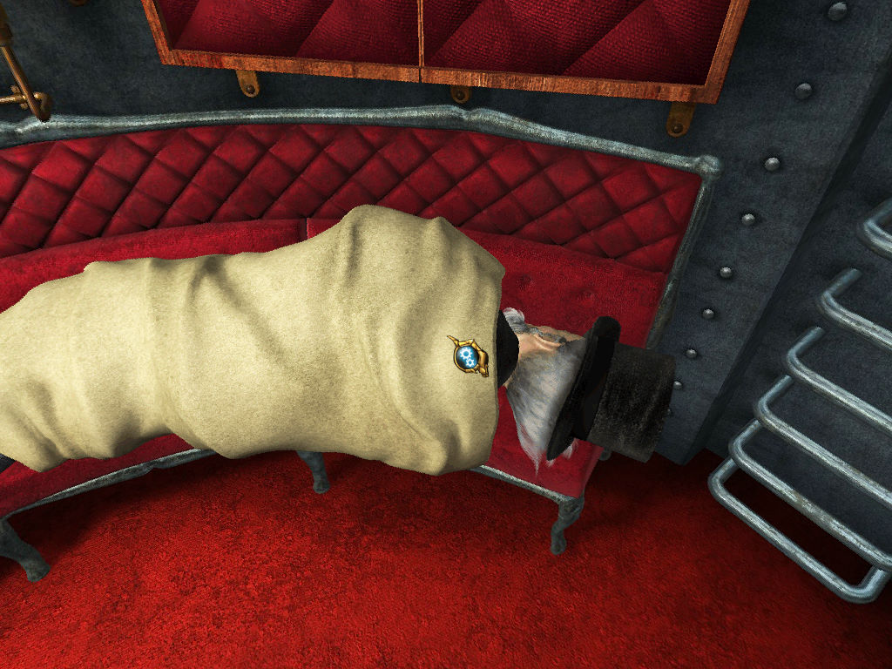

名稱：月航／月球之旅／航行：儒勒凡爾納的啟發 (Journey to the Moon／Voyage: Inspired by Jules Verne，簡中／英文版) 簡介：Kheops 2005年出品的冒險解謎遊戲，由Adventure代理發行 [待補]。   保護：無 備註：簡中漢化版必須在簡中系統上執行，否則會亂碼或無法顯示文字。 檔案：Voyage0.97.rar = 簡中漢化檔0.97版

